ラボ MCS4 - Microsoft 365 Copilot の拡張
このラボでは、 Microsoft 365 Copilot Chat を Microsoft Copilot Studio で作成した宣言型エージェントで拡張する方法を学習します。これまでに Copilot Studio でエージェントを作成し、それを Microsoft Teams で利用する方法を確認しました。また、 Copilot Studio で作成したエージェントは Teams and Microsoft 365 Copilot チャネルのオプションを使用して、 Microsoft Teams と Microsoft 365 Copilot Chat の両方を対象にできることも見てきました。本ラボでは、 Microsoft 365 Copilot Chat 用の宣言型エージェントに取り組みます。
このラボで学習する内容:
- Microsoft 365 Copilot Chat 用の宣言型エージェントの作成方法
- エージェントのカスタム アイコン設定方法
- エージェントのナレッジ ソース設定方法
- エージェントを Microsoft 365 Copilot Chat に発行する方法
- Microsoft 365 Copilot Chat 用アクションの作成方法
Microsoft Copilot Studio でエージェントを構築したい場合は、これらのラボを実施してください
Exercise 1 : Microsoft 365 Copilot Chat 用エージェントの作成
この演習では、 Microsoft Copilot Studio で宣言型エージェントを作成し、 Microsoft 365 Copilot Chat でホスティングします。
Step 1: Copilot Chat 用エージェントの作成
Microsoft 365 Copilot Chat 用の宣言型エージェントを作成するには、1️⃣ Copilot Studio でエージェントの一覧を表示し、2️⃣ Microsoft 365 Copilot という名前のエージェントを選択します。
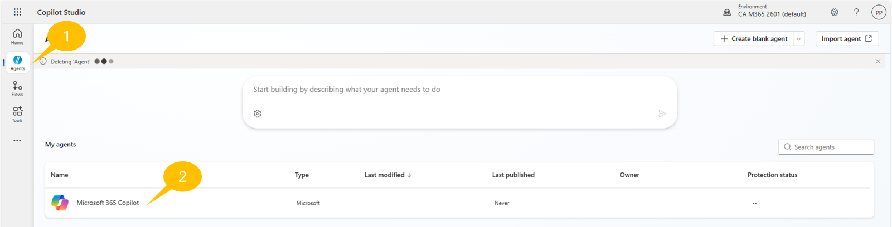
Microsoft Copilot Studio の新しいセクションが開きます。そこで + Add コマンドを選択し、 Microsoft 365 Copilot Chat 用の新しいエージェントを作成します。
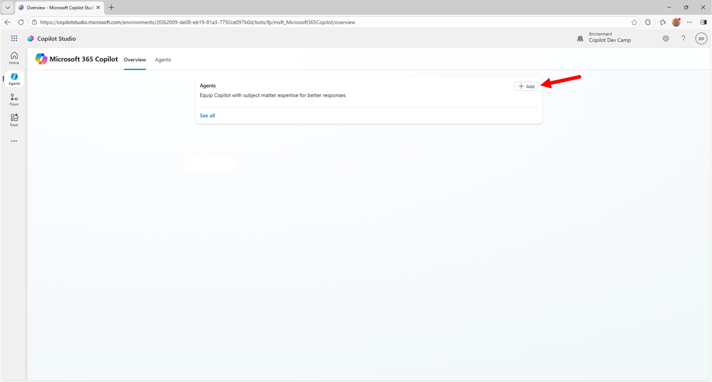
Copilot Studio では、エージェントの目的を自然言語で入力するよう求められます。Lab MCS1 と同様に、以下のプロンプト例を用いて自然言語で要件を定義できます。
You are an agent helping employees to find information about HR policies and procedures,
about how to improve their career, and about how to define learning pathways.
Copilot Studio に名前を聞かれたら、カスタム エージェントに "Agentic HR" と入力します。その後、以下の指示でエージェントに特定のタスクやゴールを伝えます。
Emphasize everything that helps team building, inclusion, and the growth mindset
さらに、次の入力を使ってエージェントのトーンを「プロフェッショナル」に設定します。
It should have a professional tone
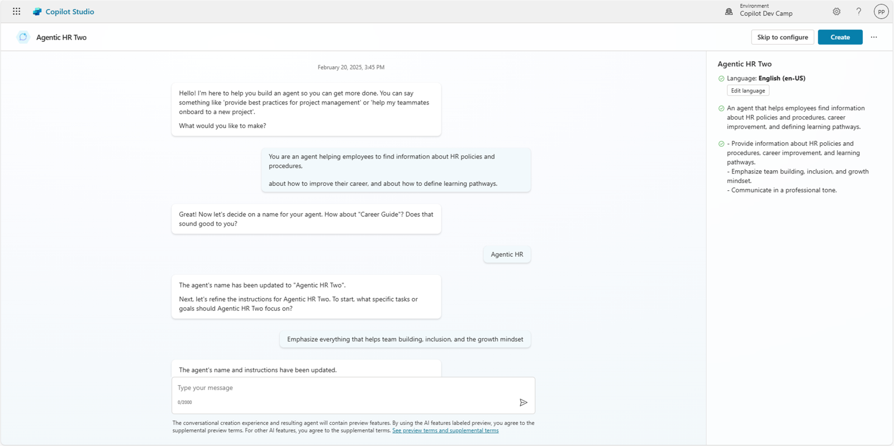
エージェントの説明が完了したら Create を選択して実際にエージェントを作成します。あるいは Skip to configure を選択して従来の設定 UI に進むこともできます。
エージェントが作成されると、その設定ページが表示され、以下を定義できます。
- Details: 名前、アイコン、説明、 instructions (システムプロンプト) などエージェントの基本情報
- Knowledge: エージェント用のナレッジ ベース
- Actions: カスタム アクション
- Additional settings: 公開 Web コンテンツの利用有無
- Starter prompts: Copilot Chat で新規チャット開始時に表示する最大 6 件のスターター プロンプト
- Publishing details: 発行後の利用方法に関する情報
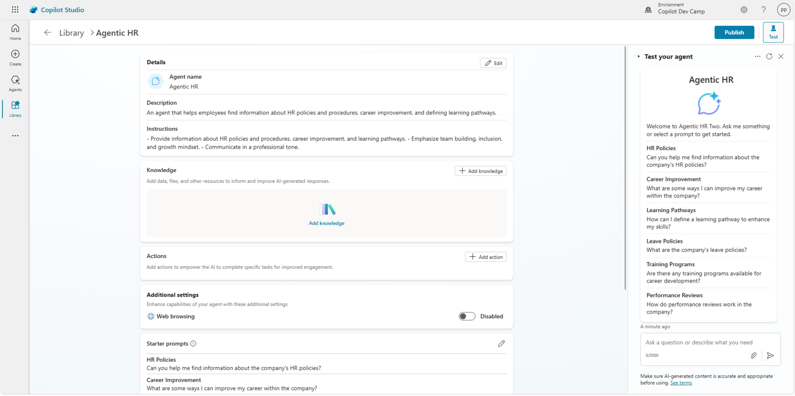
画面右側にはエージェントのプレビューが表示され、動作をテストできます。 初期セットアップが完了したので、次の手順で詳細設定を行いましょう。
Step 2: エージェント アイコンの更新
Details セクション右上の Edit コマンドを選択し、詳細を編集します。編集モードで Change icon を選択し、カスタム アイコンをアップロードして背景色を設定します。
必要であれば こちらのリンク のアイコンを使用できます。推奨アイコンを使用する場合、背景色は #B9BAB5 が適切です。
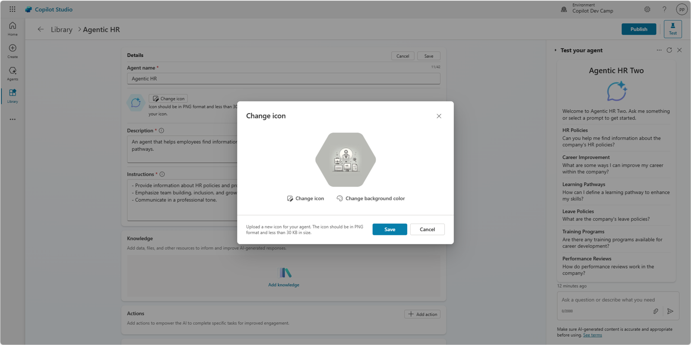
Save を選択して新しいアイコンと背景色を保存し、再度 Save を選択してエージェントの詳細を更新します。
Step 3: ナレッジ ベースの追加
Lab MCS1 と同様に、こちらの リンク から複数のファイル (Word、 PowerPoint、 PDF) が入った ZIP ファイルをダウンロードしてください。
ZIP を解凍し、同じテナント内の SharePoint Teams サイトの Documents ライブラリにアップロードします。これらのドキュメントは、エージェントに追加のナレッジ ベースを提供する目的で Microsoft 365 Copilot により生成されたものです。
サイトの絶対 URL をコピーします。例: https://xyz.sharepoint.com/sites/contoso
ナレッジ ソースを追加するには、 Knowledge セクション右上の + Add knowledge を選択します。ダイアログが開き、データ ソースを選択できます。執筆時点では SharePoint を選べます。 SharePoint を選択し、使用するサイトを参照します。
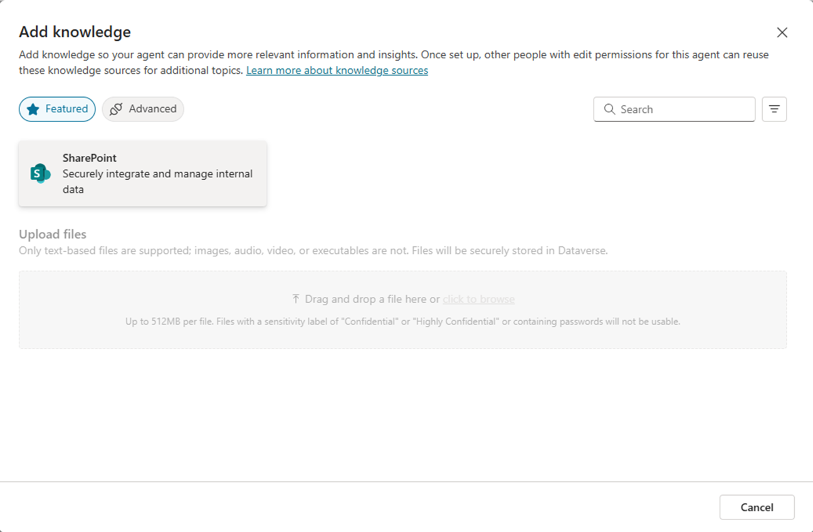
SharePoint Online サイトの URL を貼り付けるか、 Browse files を選択してサイトを参照します。 URL またはデータ ソースを指定したら、ナレッジ ベースの名前とわかりやすい説明を入力します。この説明は、ユーザーのプロンプトに基づく意図に応じて Copilot がデータ ソースを利用する際に役立ちます。
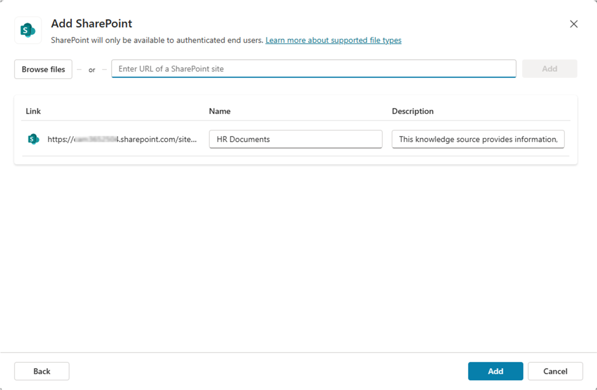
Add を選択してナレッジ ベースにデータ ソースを追加します。
Important
Copilot Studio でエージェントのナレッジ ベースとして SharePoint Online サイトを設定する場合、ユーザーは自分がアクセス権を持つドキュメントの内容のみ取得できます。セキュリティとアクセス制御は Microsoft 365 のセキュリティ基盤で保証され、 Copilot Studio のエージェントは現在のユーザーの権限でドキュメントにアクセスします。
Step 4: エージェントを Microsoft 365 Copilot Chat に発行
エージェントを発行して Microsoft 365 Copilot Chat でテストしましょう。1️⃣ ページ右上の Publish を選択し、 Copilot Chat で利用できるようにします。次に 2️⃣ エージェントの詳細を入力し、最後に 3️⃣ ダイアログ下部の Publish を選択します。
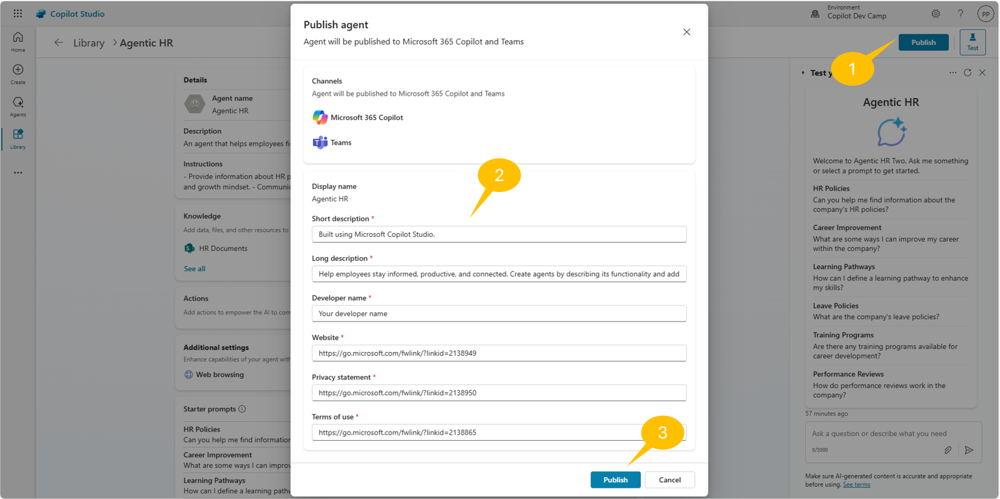
エージェントの詳細は Microsoft 365 アプリのマニフェスト要件に相当します。
- Short description: エージェントの短い説明 (30 文字以内)
- Long description: エージェントの長い説明 (100 文字以内)
- Developer name: 開発者名 (32 文字以内)
- Website: 開発者 Web サイトの URL (2048 文字以内)
- Privacy statement: プライバシー ポリシーの URL (2048 文字以内)
- Terms of use: 利用規約の URL (2048 文字以内)
初回の発行には 30〜60 秒ほどかかります。発行が完了すると、利用オプションをまとめたダイアログが表示されます。
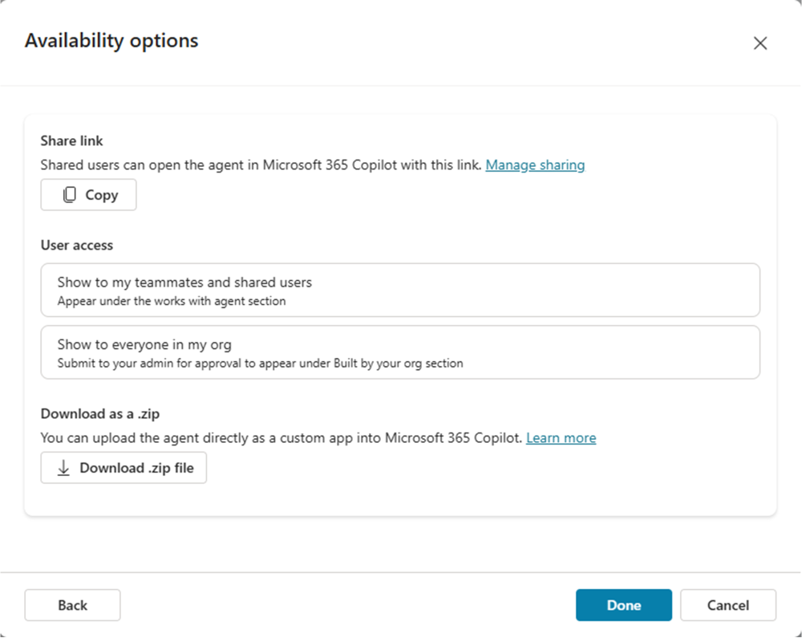
具体的には、以下を選択できます。
- Copy: エージェント アプリへの直接リンク URL をコピー
- Show to my teammates and shared users: 組織内の特定ユーザーまたはグループと共有
- Show to everyone in my org: 組織全体と共有
- Download .zip file: ストア公開用アプリの ZIP パッケージをダウンロード
Show to everyone in my org
エージェントを組織全体に公開する場合、リリース準備が整い、社内基準・規則・ポリシーに準拠していることを確認してください。同僚と調整のうえ、提出後は管理者が承認または拒否するまで再提出できません。詳細は Show to the organization を参照してください。
Copy を選択し、新しいブラウザー タブで URL を開きます。 社内アプリ ストアが表示され、ダイアログの Add ボタンでエージェントを Microsoft 365 Copilot に追加できます。
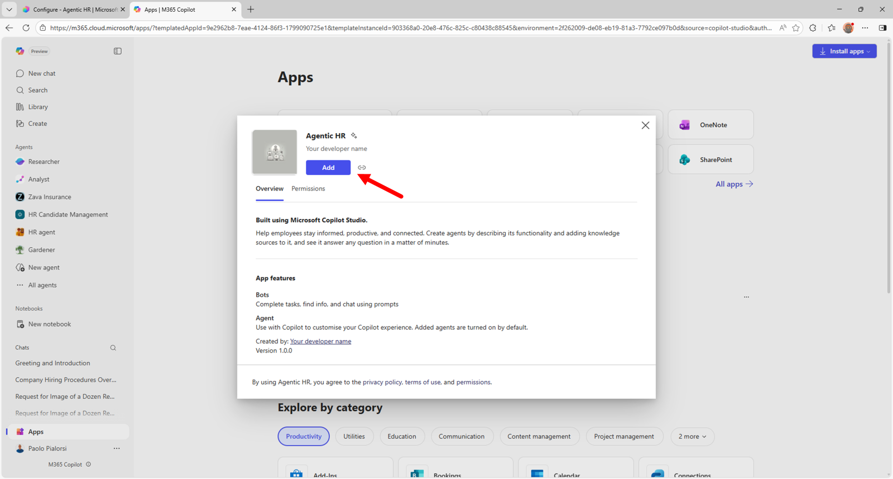
エージェントを Microsoft 365 Copilot Chat に追加すると、 Copilot チャット右側のエージェント一覧に表示されます。
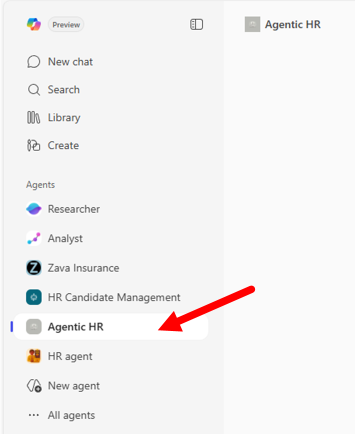
エージェントを選択してやり取りを開始します。例えば、次のプロンプトを入力できます。
How can we hire new people in our company?
エージェントはナレッジ ベースのドキュメントに基づいて採用手続きの詳細を回答します。たとえば、主なデータ ソースは SharePoint Online にアップロードした Hiring Procedures.docx になります。
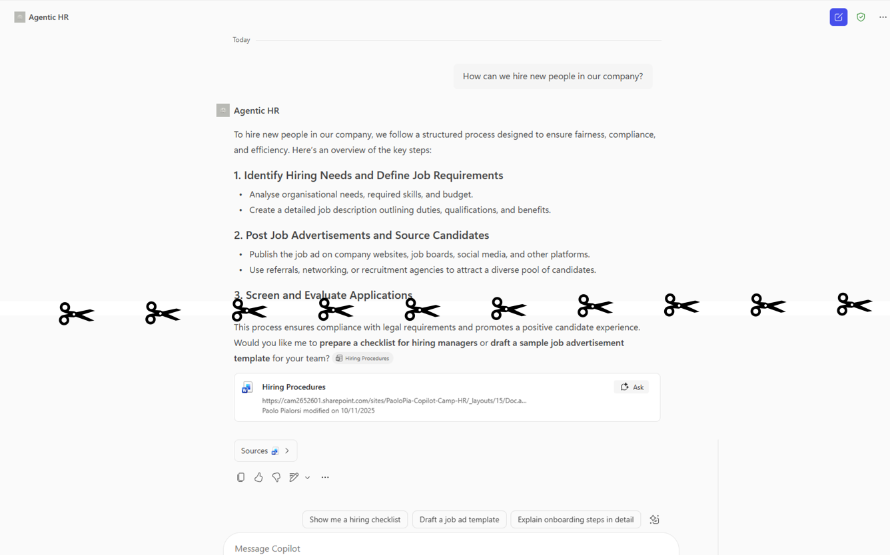
Exercise 2 : エージェントへのアクション追加
この演習では、前の演習で作成したエージェントにカスタム アクションを追加します。 Copilot Studio で Microsoft 365 Copilot Chat 向けエージェントを作成する際、追加できるアクションは 4 種類あります。
- New prompt: 自然言語プロンプトで作成した AI アクションを利用
- New Power Automate flow: Power Automate フローを利用
- New custom connector: Power Platform のカスタム コネクタを利用
- New REST API: 外部 REST API を利用。詳細は こちら
Actions for agents
Copilot Studio でエージェントにアクションを追加する方法の詳細は Use actions with custom agents (preview) を参照してください。
このラボでは New custom connector タイプのアクションを追加し、 SharePoint Online に保存された Excel スプレッドシートから候補者一覧を取得します。
Step 1: Microsoft 365 Copilot 用エージェントにアクションを追加
Actions セクションの + Add action コマンドを選択します。
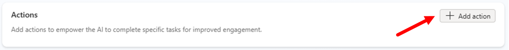
ダイアログが開き、作成するアクションの種類を選択できます。デフォルトでは Featured アクションとして Excel Online など一般的なサービスとの連携が表示されます。 + New action を選択すると前述のオプションから新規アクションを作成できます。
目的のオプションが見つからない場合は Library グループに切り替え、テキスト検索してください。
今回は Excel Online (Business) ファミリーの List rows present in a table を選択します。まず Next をクリックしてコネクタへの接続を進めます。
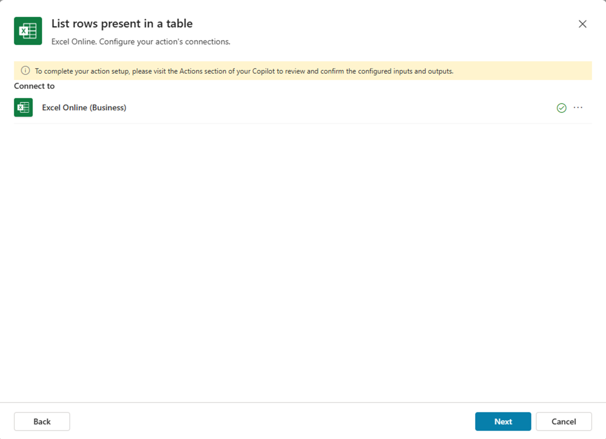
続いてアクション設定ダイアログが表示されます。以下を設定します。
- Name: アクションの説明的な名前
- Description: ジェネレーティブ オーケストレーションがアクションを使用するタイミングを判断するための自然言語説明
- Authentication settings: 認証方式
- Inputs and outputs: 入出力パラメーター
- Response settings: ユーザーへの応答方法
設定前に候補者一覧の Excel ファイルを準備します。 こちらのサンプル ファイル をダウンロードしてください。
同じテナントの SharePoint Teams サイト Documents ライブラリにアップロードします。これは架空の候補者一覧で、 Microsoft 365 Copilot により生成されています。
- サイト コレクションの絶対 URL をコピー (例:
https://xyz.sharepoint.com/sites/contoso/) - ドキュメント ライブラリ名をコピー (例:
Shared documents) - ファイル名もコピー (例:
Sample-list-of-candidates.xlsx)
Copilot Studio に戻り、アクション設定を完了します。
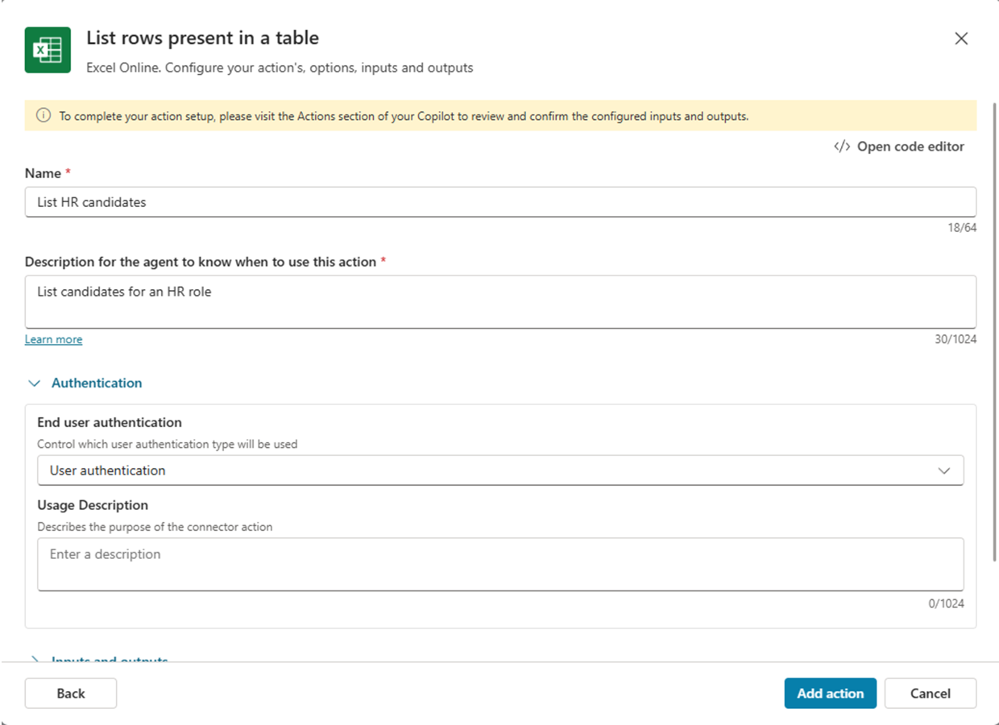
設定値:
- Name: List HR candidates
- Description: List candidates for an HR role
- Authentication: User authentication
Add action を選択しアクションを保存します。アクション一覧に追加されるので、作成したアクションをクリックして編集します。
編集ダイアログで Action name をよりわかりやすい名称に更新します。次に Inputs タブで入力パラメーターを設定します。
既定では必須入力はすべて Identify as が User's entire response になっています。
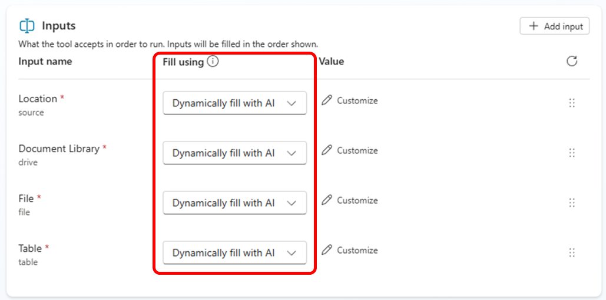
各入力の How will the agent fill this input? を Set as a value に変更し、静的値を設定します。変更を確認し、すべての入力に静的値を入力します。
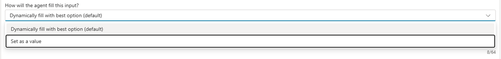
静的値:
- Location: Excel を保存した SharePoint Online サイト コレクションの URL (例:
https://xyz.sharepoint.com/sites/contoso/) - Document Library: ライブラリ名 (例:
Shared Documents) - File: ファイル名 (例:
Sample-list-of-candidates.xlsx) - Table:
Candidates_Table
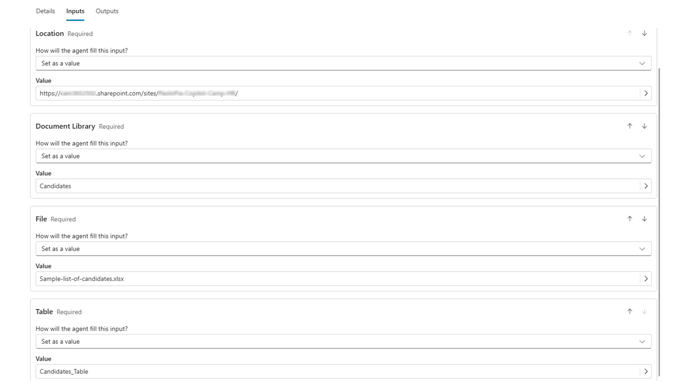
画面右上の Save を選択してアクションを保存します。
Step 2: 新しいアクションのテスト
更新したエージェントを発行し、統合テスト パネルまたは Microsoft Teams で試します。再度 Publish をクリックしてエージェントを更新し、処理が完了するまで待ちます。直接リンクを開くと Add の代わりに Update now が表示されるので Update now を選択します。完了したら Microsoft 365 Copilot Chat を更新し、エージェントと対話します。
作成したアクションは次のようなプロンプトで簡単に呼び出せます。
Show me the list of candidates for HR with role "HR Director" or "HR Manager"
Microsoft 365 Copilot Chat は外部 API (Excel Online) の利用許可を求めてきます。 Always allow または Allow once を選択します。テスト用に Allow once を選んでおくと、後で再度認証プロセスをテストできます。
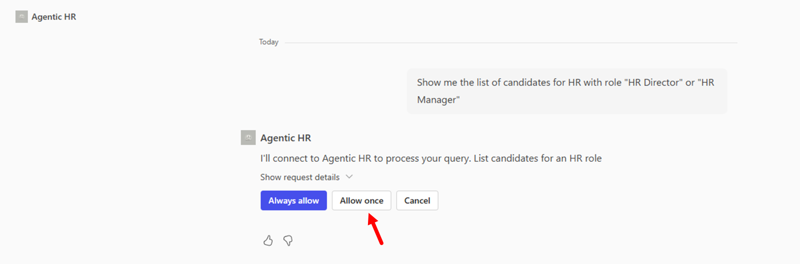
Power Platform コネクタは有効な接続を必要とするため、エージェントはユーザーに Sign in to Agentic HR を促します。
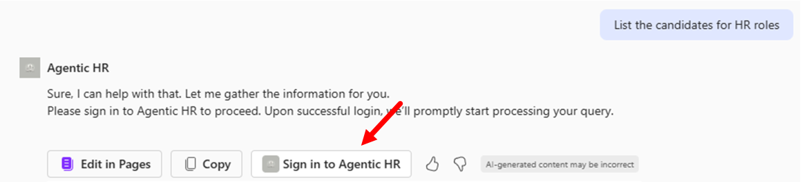
接続を完了し、再度プロンプトを実行すると、エージェントが Excel スプレッドシートから条件に合致した候補者一覧を返します。
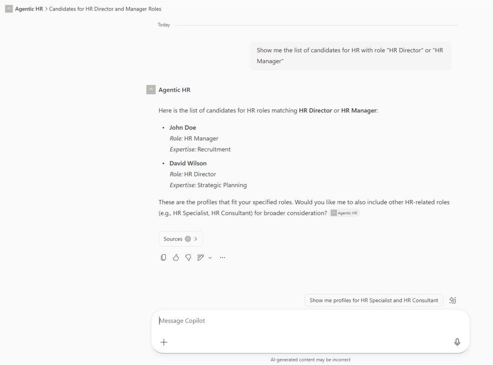
お疲れさまでした! Copilot Studio のエージェントから外部コネクタを利用できました。
おめでとうございます！
Start here with Lab MCS5, to learn how to use custom connectors in Copilot Studio.